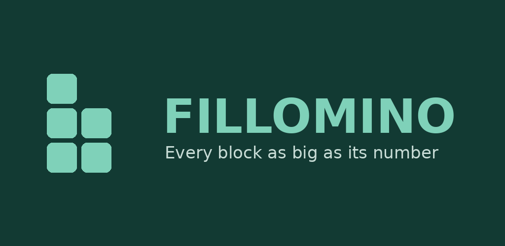

What is Fillomino?
Fillomino is a single-player logic puzzle game for Android, published by xBitsNL Gaming. You fill a square grid with numbers. Cells holding the same number that touch side by side form one block, and every block must contain exactly as many cells as its number — a block of 3s is three cells, a block of 5s is five. Two separate blocks of the same number may never touch edge to edge. Every puzzle has a single solution that can be reached by pure reasoning, so you never have to guess.
Features
- Daily puzzle — the same board for every player on a given date, growing from 5×5 early in the week to 9×9 at the weekend.
- Streak counter — track your current streak, best streak, total puzzles solved and average solve time, with a 30-day calendar.
- Leaderboards (optional) — compare your longest streak, fastest hint-free daily solve and total puzzles solved through Google Play Games.
- Practice mode — freely generated puzzles from 5×5 to 11×11.
- Colour-coded blocks, tap-a-cell-then-a-number input, hints, and undo.
- Playable offline. No account required. Supported by ads, with a one-time in-app purchase to remove them — see the Privacy Policy.
Google Play Games
Fillomino uses Google Play Games Services for its optional online leaderboards. Signing in is entirely optional; all core gameplay — including the daily puzzle and your local streak — works without it. See the Privacy Policy for what is shared when you sign in.
Get the app
Fillomino is distributed through Google Play under the package name
com.xbitsnl.fillomino. A public store link will be added here when the app leaves
testing.
Contact
xBitsNL Gaming — Jeroen Oudshoorn
oudshoorn.jeroen@gmail.com